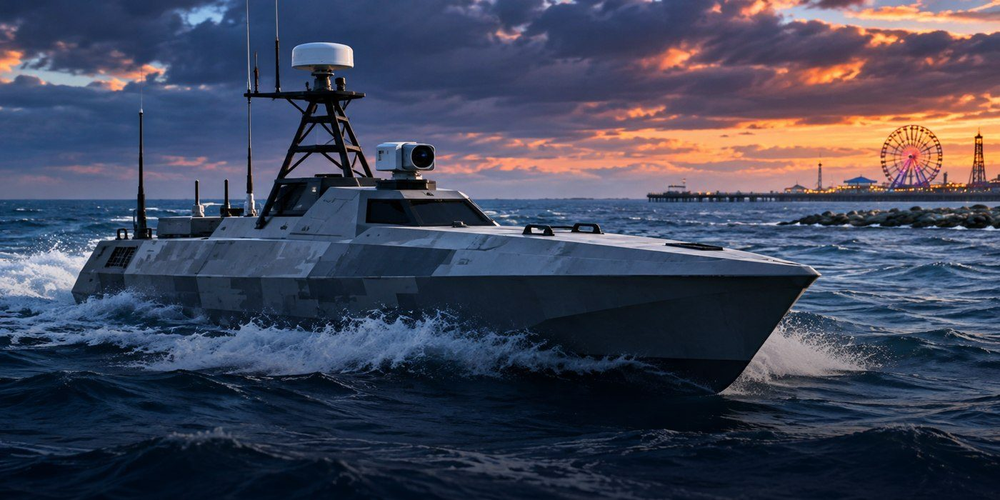

Saronic Mirage Launches in Galveston: What the 52-Foot Autonomous Vessel Can Do
A Texas-built unmanned vessel has entered the water at Galveston, but its customer and production contract remain undisclosed.

A new autonomous vessel from Texas
Saronic Technologies launched another Mirage autonomous surface vessel at Galveston in early November, following an earlier Mirage launch in July. The vessel was built at the company’s Austin headquarters and transported to the coast for testing.
How big is Mirage?
According to published specifications, Mirage is 52 feet long, can travel faster than 35 knots and has a range exceeding 2,500 nautical miles. Its stated payload capacity is 3,500 pounds. The craft can operate autonomously or with remote human supervision.
Does the Navy own it?
Not necessarily. A public Mirage customer or production award has not been disclosed. Saronic has other Navy-related work, but that does not establish that this particular vessel has a Navy contract.
Why this matters for Texas
The launch highlights an emerging defense-manufacturing corridor spanning Austin and the Gulf Coast. For Texas, the story is as much about shipbuilding capacity and jobs as it is about naval technology.